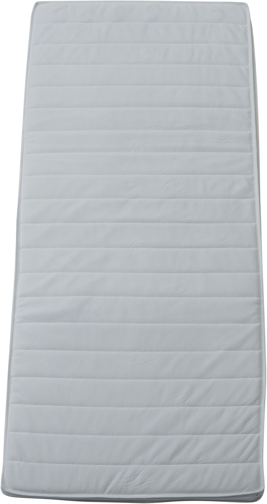
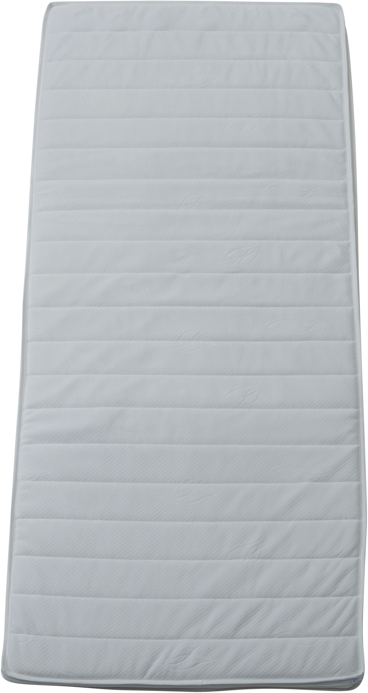

Moon Bronze Basic mattress topper 180x200x5 cm
197755

 

Description
Enhance your sleeping comfort with the Moon Bronze Basic mattress topper, measuring 180x200x5 cm. Crafted from high-quality foam, this topper adds a gentle yet supportive cushioning layer to your existing mattress. Its light gray hue brings a modern, understated look that blends seamlessly with bedroom decor. Designed for the Bronze tier of the NEST & LIVING collection, it offers ideal pressure relief and breathability, enhancing restful sleep. Lightweight and flexible, it is easy to place and remove for cleaning or storage. Perfect for those seeking affordable comfort without compromising quality.
Technical specifications
| Size | 180 × 200 cm |
|---|---|
| Thickness | 5 cm |
| Material | High-density foam |
| Color | Light gray |
| Tier | Bronze |